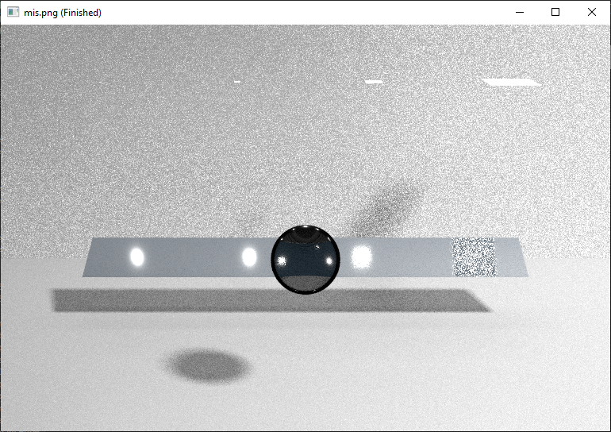

Proposal: Homogeneous Volume Rendering for Subsurface Scattering
For our project we plan to implement subsurface scattering through volumetric path tracing through a homogeneous volume. As such, our project will be an extension of the path tracer to handle these new features. If there is time, then the path tracer will be used to create a rendered image worthy for submission into a rendering competition. As volumetric rendering requires entering tracing light rays through different media, transmission and full support for a BSDF are necessary. Our BSDF implementation will follow the guidelines presented by the original GGX paper and will consist of our existing GGX BRDF implementation, which we have been using for past homeworks, as well as an ideal BTDF implementation which we have written specifically for this project. At each intersection, we will use the Fresnel term to probabilistically decide whether or not we should sample according to the BRDF or BTDF. This will prevent our path tracer from growing at an exponential rate as otherwise we would be shooting two rays at each intersection, one for reflection and one for refraction. With the addition of the BTDF we will have effectively handled ray transmission and ray reflection thereby implementing a BSDF. Additionally we will model subsurface scattering interactions by using volumetric rendering techniques whenever we enter an object. For these techniques we are following the closed tracking outline provided by the SIGGRAPH 2017 Course paper. We have rendered a variety of test images to show both our progress and final implementation.
Implementing the BTDF
The first step in implementing our BSDF was to implement ray transmission through a material. To achieve this, we implemented an ideal refraction BTDF in order to generate our refracted ray. For our scenes we defined materials as either transmissive or non-transmissive, with all transmissive materials subject to both refraction and reflection. This is opposed non-transmissive materials which only handled surface reflection. We used the Fresnel reflection coefficient for unpolarized light to decide between refraction and reflection at each intersection on a transmissive material. Direct lighting for transmissive materials is handled using either the ideal refraction BTDF or GGX BRDF at each boundary depending on if the ray refracts or reflects. In both cases we generate a sample and test to see if it hits any of the lights within the scene. If the sample intersects with the light and is not occuluded, we use the respective BTDF or BRDF in order to add radiance due to direct lighting.
Here is the Stanford Dragon with a transmissive material very similar to glass. We defined the indices of refraction for the dragon and the surrounding medium in the tester file. In this scene we use n=1.445 and n=1.00029 to represent glass and air. Notice that the first dragon is rendered with direct light due to refraction and the second dragon is rendered without direct light due to refraction. The dragon without direct light has much stronger shadows due to total internal reflection compared to the direct light dragon which has much lighter shadows due to the direct lighting that it receives. The default dragon rendering using only a BRDF is also included for reference.

This is a Cornell Box scene we created with a single completely specular cube inside. The rendering of the cube with transmission resembles a perfectly clear window whereas the cube without transmission rerpresents a perfectly clear mirror. Besides the images produced on the faces of the cube being different, you can also see the difference in color at the base of the cubes. For the non-transmissive cube, you can see the red and green light of the colored walls being reflected at the base. This is opposed to the transmissive cube, which transmits nearly all light and does not have the reflected color at the base.

This is a custom scene we made for this project. It involves the MIS scene from HW4, but with only one panel and a sphere in the front. An interesting note is that when the maximum depth is configured to be 2, the sphere is actually very clear and represents the scene before noise comes in. This is because light must pass through the glass sphere before reaching the rest of the scene, essentially providing a window to view the scene behind it but with one less bounce of light.
Implementing Volumetric Rendering
The second step to implementing our BSDF was to implement a closed-path tracking solution to the volume rendering equation with reference from Production Volume Rendering SIGGRAPH 2017 Course by Fong et al. We limit our implementation to homogeneous volumes, allowing us to use a normalized version of the Beer-Lambert law as a free-flight estimator. At each intersection we apply a Russian Roulette based approach where we probabilistically sample between an emission event and an in-scattering based event. To deal with out-scattering and absorption, we reduced the throughput using the Beer-Lambert Law and the distance traveled between subsequent collision events. For in-scattering, we used the Henyey-Greenstein phase function to modulate the distribution of likely incident light directions. As the phase function is also defined as a probability distribution, we can assume perfect importance sampling (the phase function output with respect to the angle between the incident and outgoing radiance directions is equal to its respective probability density function). Example scenes are given below.